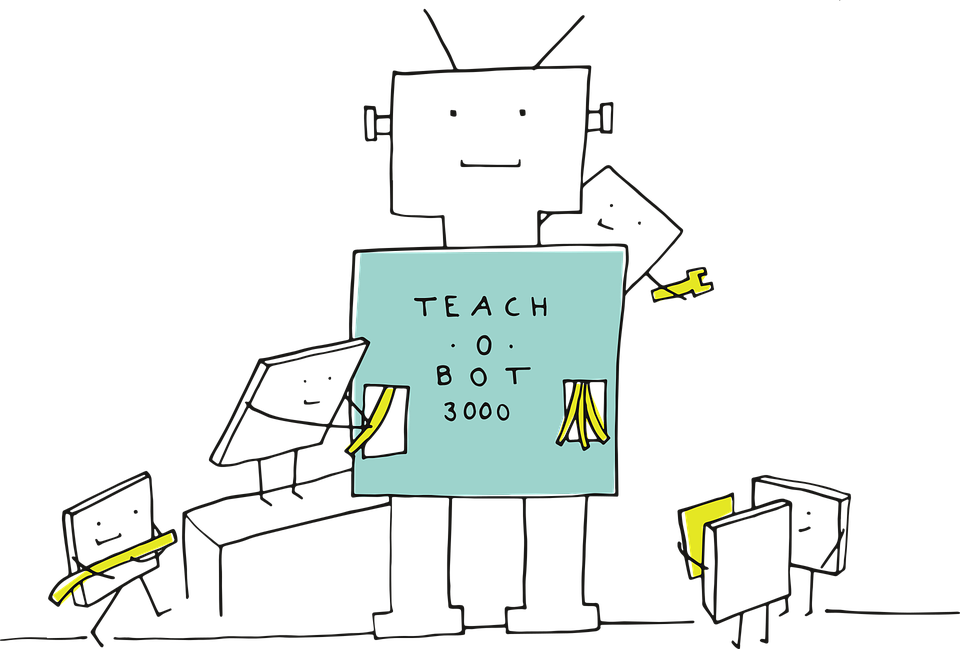

Wat is machine learning?
Een veelgebruikte, formele definitie van machine learning is een techniek waarbij een computerprogramma zou kunnen leren van gebeurtenis E, ten opzichte van soortgelijke taken T en prestatiemaatstaf P, als zijn prestatie op de taken in T, zoals gemeten door P, verbeterd door ervaring E.
Machinaal leren omvat, kortgezegd, computer algoritmes die gebruikt worden om autonoom, dus zonder begeleiding, te leren van data en input. Hierbij hoeven computers dus niet zelf geprogrammeerd te worden, maar kunnen zelfstandig hun algoritmes veranderen en verbeteren.
Vandaag de dag wordt algoritmes voor machinaal leren gebruikt om, onder meer, computers met mensen te laten communiceren, een zelfrijdende automogelijk te maken , verslagen en statistieken van sportwedstrijden te schrijven en publiceren, e-mails te controleren op spamberichten, en mogelijke terroristen te herkennen en lokaliseren. Nagenoeg iedere industrie zal te maken krijgen met machinaal leren, en direct de positieve gevolgen ervan achterhalen.

Er zijn verschillende soorten Machine Learning:
| Soort | Omschrijving |
|---|---|
| Gecontroleerd leren | Hierbij krijgt het algoritme voorbeelden van gangbare input en daarbij passende output. Aan de hand van deze voorbeelden leert het systeem hoe bepaalde eigenschappen van de input bepalen wat de output gaat zijn. |
| Ongecontroleerd leren | waarbij geen voorbeelden gegeven worden van gangbare input en de gewenste output; maar het system zelf leert, aan de hand van de structuur van de input, bijvoorbeeld door input onder te verdelen in soortgelijke groepen. |
| Semigecontroleerd leren | bevat zowel elementen van gecontroleerd en ongecontroleerd leren. Na een incomplete 'leersessie' via de gecontroleerde methode, leert het systeem verder via ongecontroleerd leren. |
| Ondersteund leren | Leert zichzelf gedrag aan, aan de hand van zijn relatie tot de rest van de wereld en behaalde successen. Het systeem leert dus al doende, bijvoorbeeld door het rijden in een voertuig of het spelen van een bepaald spel. |
| Transductieleren | Wordt het minst gebruikt van alle methoden, en kan alleen getraind worden voor een beperkte set gevallen (gebaseerd op een budget), waarbij zelfstandig een keuze gemaakt dient te worden tussen gevallen waarin getraind moet worden. |
| Deep learning | gebruikt de input als basis voor het begrijpen van de wereld en het ontwikkelen van concepten. Bijvoorbeeld voor het herkennen van vormen, of een dier: heeft het rechte zijden? Hoeveel? Heeft het ogen, oren, welke vorm? Aan de hand van dergelijke input wordt met deep learning geleerd om concepten te herkennen en te reflecteren op nieuwe concepten. |